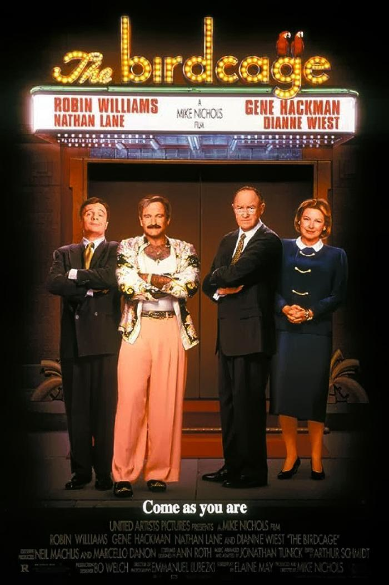
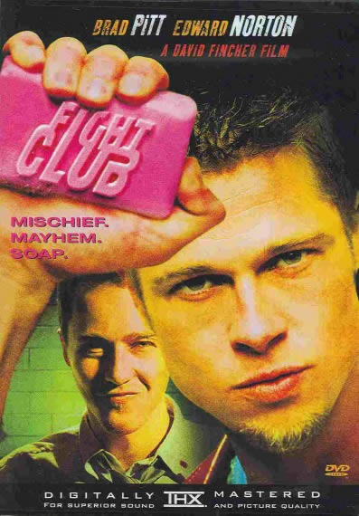
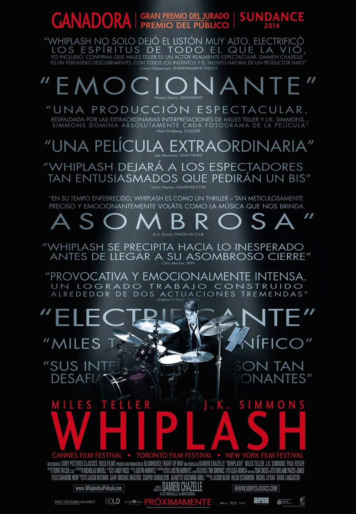
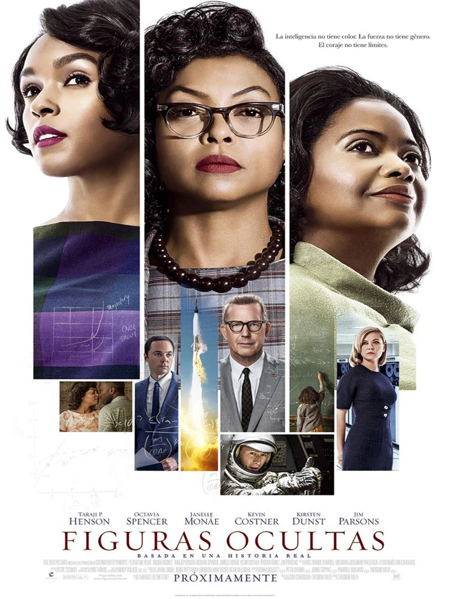

Puesto 1: El Señor de los Anillos: El Retorno del Rey
2003 · 3h 21m · Fantasía
Reparto: Elijah Wood, Viggo Mortensen, Ian McKellen, Orlando Bloom, Sean Astin
Director: Peter Jackson
Valoración: ⭐⭐⭐⭐⭐

2003 · 3h 21m · Fantasía
Reparto: Elijah Wood, Viggo Mortensen, Ian McKellen, Orlando Bloom, Sean Astin
Director: Peter Jackson
Valoración: ⭐⭐⭐⭐⭐
2021 · 2h 35m · Ciencia ficción
Reparto: Timothée Chalamet, Zendaya, Oscar Isaac, Rebecca Ferguson, Josh Brolin
Director: Denis Villeneuve
Valoración: ⭐⭐⭐⭐⭐
2014 · 2h 49m · Ciencia ficción
Reparto: Matthew McConaughey, Anne Hathaway, Jessica Chastain, Michael Caine, Matt Damon
Director: Christopher Nolan
Valoración: ⭐⭐⭐⭐⭐

2005 · 2h 16m · Deporte
Reparto: Samuel L. Jackson, Rob Brown, Rick Gonzalez, Robert Ri'chard, Channing Tatum
Director: Thomas Carter
2018 · 1h 57m · Animación
Reparto: Shameik Moore, Jake Johnson, Hailee Steinfeld, Mahershala Ali, Nicolas Cage
Directores: Bob Persichetti
Valoración: ⭐⭐⭐⭐⭐
1996 · 1h 57m · Comedia
Reparto: Robin Williams, Gene Hackman, Nathan Lane, Dianne Wiest, Hank Azaria
Director: Mike Nichols
Valoración: ⭐⭐⭐⭐⭐

1999 · 2h 19m · Drama, Thriller
Reparto: Brad Pitt, Edward Norton, Helena Bonham Carter, Meat Loaf, Jared Leto
Director: David Fincher
Valoración: ⭐⭐⭐⭐⭐

2019 · 2h 12m · Thriller, Drama, Comedia negra
Reparto: Song Kang-ho, Lee Sun-kyun, Cho Yeo-jeong, Choi Woo-shik, Park So-dam
Director: Bong Joon-ho
Valoración: ⭐⭐⭐⭐⭐

2014 · 1h 46m · Drama, Música
Reparto: Miles Teller, J.K. Simmons, Melissa Benoist, Paul Reiser
Director: Damien Chazelle

2016 · 2h 7m · Drama, Biográfico, Histórico
Reparto: Taraji P. Henson, Octavia Spencer, Janelle Monáe, Kevin Costner, Kirsten Dunst
Director: Theodore Melfi
Valoración: ⭐⭐⭐⭐⭐

2006 · 1h 56m · Animación
Reparto: Owen Wilson, Paul Newman, Bonnie Hunt, Larry the Cable Guy, Tony Shalhoub
Director: John Lasseter
Valoración: ⭐⭐⭐⭐⭐

1972 · 2h 55m · Drama
Reparto: Marlon Brando, Al Pacino, James Caan, Robert Duvall, Diane Keaton
Director: Francis Ford Coppola
Valoración: ⭐⭐⭐⭐⭐

2002 · 2h 10m · Drama
Reparto: Alexandre Rodrigues, Leandro Firmino, Phellipe Haagensen, Douglas Silva, Jonathan Haagensen
Director: Fernando Meirelles
Valoración: ⭐⭐⭐⭐⭐

1994 · 2h 22m · Drama
Reparto: Tim Robbins, Morgan Freeman, Bob Gunton, William Sadler, Clancy Brown
Director: Frank Darabont
Valoración: ⭐⭐⭐⭐⭐

1993 · 2h 13m · Drama
Reparto: Daniel Day-Lewis, Pete Postlethwaite, Emma Thompson, John Lynch, Corin Redgrave
Director: Jim Sheridan
Valoración: ⭐⭐⭐⭐⭐